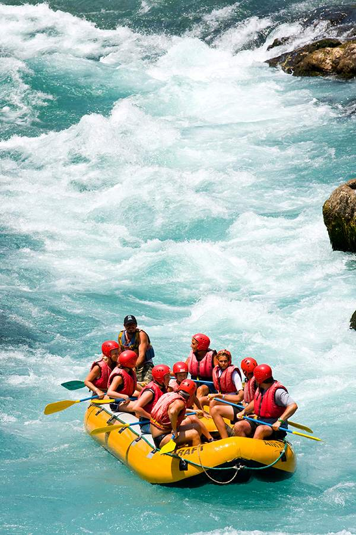

Flutuação
R$ 90 por pessoa
- 2 horas de passeio
- Colete e máscara
- Guia durante todo o trajeto





Somos uma operadora de turismo de aventura que cria roteiros com segurança, emoção e muita diversão para iniciantes e para remadores experientes.

Quedas, ondas e muita adrenalina com guias experientes no comando.
Saiba maisFlutuação em águas cristalinas, ideal para a família toda.
Saiba maisUma noite à beira do rio, com fogueira, jantar e café da manhã.
Saiba maisAproveite a paisagem de Bonito, os vales e as águas transparentes. Descer o rio é uma ótima maneira de fugir da rotina, relaxar a mente e viver a beleza da natureza ao lado de amigos e família.
Junte-se a nósR$ 90 por pessoa
Mais pedido
R$ 180 por pessoa
R$ 250 por pessoa
Antes de cada descida, nossa equipe faz um treinamento de remada e de procedimentos de emergência. Tudo para você curtir o rio com tranquilidade.
Não. Todos usam colete salva-vidas e recebem instruções de segurança antes da saída.
Roupa de banho, calçado fixo aos pés, protetor solar e uma troca de roupa seca.
Depende do passeio, de 6 a 16 anos. Confira a tabela na página de passeios.
Veja os detalhes, as durações e os preços de cada aventura.
Ver todos os passeios